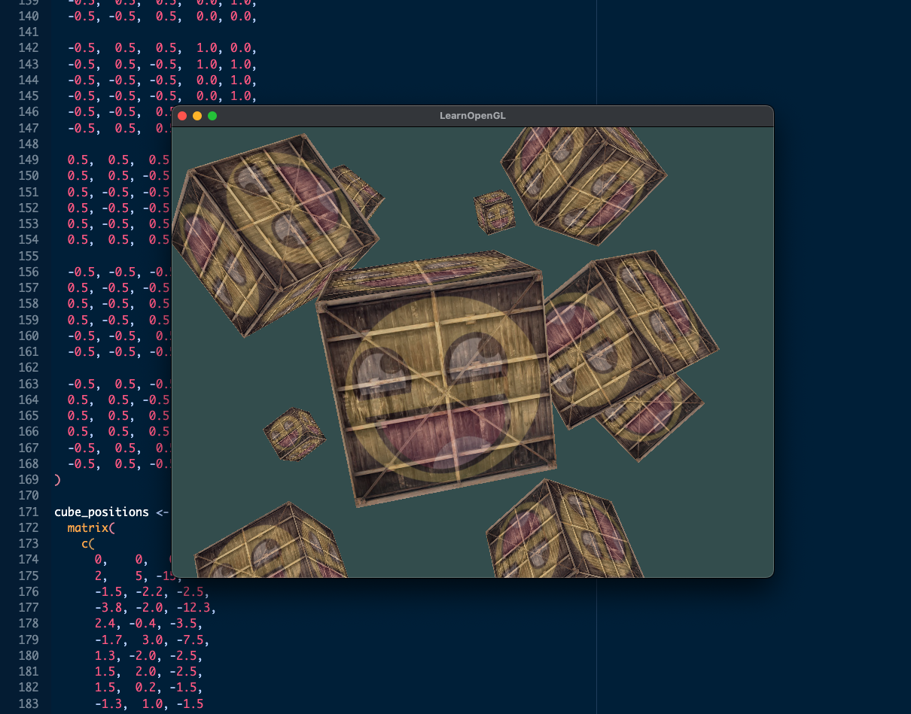

Getting involved
This section highlights computational projects that are in early development or could benefit from additional input to reach their full potential. Whether you’re a student, researcher, or developer interested in contributing, we welcome collaborators to join us.
These projects offer opportunities to gain hands-on experience, share expertise, and co-author meaningful scientific tools.
By the way, we also welcome your own ideas.
Just drop us an email at email@pattern.institute if you’re interested.
1 ensemblr


{ensemblr} is an R client to the Ensembl REST API.
The package currently covers only a subset of available endpoints. We are in the process of migrating its internals from the now-superseded httr package to the newer httr2. Ramiro Magno and Dany Mukesha are working on this, but the project would benefit from an extra pair of hands—especially if you’re interested in building API wrappers.
Browse the source code at https://github.com/patterninstitute/ensemblr.
2 fluents


{fluents} is an R package that re-implements grind.R, originally developed by Rob de Boer. grind.R itself is a port of de Boer’s earlier C-based program, GRIND (GReat INtegrator Differential equations), designed for solving systems of differential equations.

The project was initiated by Ramiro Magno and is currently looking for contributors to help bring it to a publishable first release, ideally on CRAN. If you have an interest in dynamical systems, biology, and R programming, this could be an exciting project to get involved in.
Browse the source at https://github.com/ramiromagno/fluents.
3 W4


{w4} is an R package that aims to bring the W4 method into R. The W4 method is an alternative to the Newton-Raphson (NR) method for nonlinear root finding. It offers a wider convergence region (Newton basin), though it converges linearly rather than quadratically, as the NR method does.
A proof of principle has been implemented, but the project would benefit from a more performant implementation, as well as improved testing and documentation. This may be a good fit for you if you enjoy numerical methods and programming in C or C++.
Browse the source at https://github.com/ramiromagno/w4.
4 Fractional significant digits in R


We are looking for collaborators to help implement the methodology proposed by Jørgen L. Nikolajsen in his article Fractional Significant Digits (SIAM J. Sci. Comput., 2014) as an R package.
The paper introduces two methods for quantifying the number of significant digits (specifically, fractional significant digits, or FSDs) in approximate numerical results. This offers a finer and more nuanced metric of accuracy than traditional relative or absolute error—especially relevant when comparing the performance of iterative root-finding or eigenvalue algorithms.
5 Stopping criteria for iterative root finding


We are seeking collaborators to develop an R package that implements the stopping criteria for iterative root-finding algorithms as proposed by Nikolajsen (2014). These criteria aim to enhance the efficiency of root-finding methods by terminating iterations immediately when no further improvement is possible, reducing computational workload without compromising accuracy.
This project can be a follow-up on Project 4.
6 GLFW bindings for R


We welcome collaborators to contribute to {glfw}, an experimental R package that provides bindings to the GLFW library—a lightweight framework for creating windows, contexts, and managing input in OpenGL-based applications.

This project enables R users to interact directly with the GLFW API, opening the door to interactive visualizations, real-time simulations, and even basic game development within the R ecosystem. While R is not typically used for graphics programming at this level, {glfw} explores what’s possible when low-level control meets high-level language flexibility.
If any of the following spark your interest, we’d love to collaborate:
- You enjoy programming in C or tinkering with low-level code
- You have experience (or want to gain some!) with OpenGL or graphics pipelines
- You’re excited by the idea of making R more interactive and dynamic
- You’re curious about systems programming, real-time rendering, or just trying something new
If you’re excited about expanding R’s capabilities into graphics and input systems—or just want to experiment with building high—performance graphical tools—explore the source at https://github.com/ramiromagno/glfw.
7 plink2


{plink2} is an R package under development that aims to provide a high-level interface to PLINK 2, a widely used toolset for genome-wide association studies (GWAS) and population genetics.
The goal of this project is to make PLINK 2 workflows more accessible and reproducible within R, allowing users to script, document, and share their analyses using familiar R syntax—while still benefiting from PLINK 2’s speed and efficiency.
What we’re building:
- A lightweight R interface to PLINK 2 commands using system calls
- Helpers to manage input/output paths and file formats
- Functions that wrap common PLINK 2 workflows (e.g., filtering, association testing, PCA)
- Structured outputs returned as tibbles or data frames for seamless integration with tidyverse tools
Who this might interest:
- R users working with large-scale genomic data
- Researchers looking to automate and document PLINK 2 pipelines
- Contributors interested in building reproducible infrastructure for genetic analysis
The project is in an early stage, and we’re actively shaping its scope. If you’re familiar with PLINK or interested in bridging the gap between command-line tools and R, we’d love to hear from you.
Explore the repo at https://github.com/patterninstitute/plink2/.
8 GWAS-SSF importer for R


We’re proposing a new project to create an R package that imports GWAS-SSF (Summary Statistics Format) files—an emerging standard for sharing genome-wide association study (GWAS) summary statistics.
The GWAS-SSF format aims to harmonize GWAS summary data across studies by defining a consistent, metadata-rich, tab-delimited format. This R package would help researchers read, validate, and analyze SSF-compliant datasets within R workflows.
What we aim to build:
- A robust importer that reads .tsv files and associated metadata.yaml into structured R objects
- Input validation and schema checking (e.g., required columns, field types, ontology term checks)
- Support for tidy parsing of optional fields (e.g., imputation quality, allele frequency, standard error)
- Optional integration with gwasrapidd or other tools for downstream querying and analysis
- Utilities to coerce or export data into other formats (e.g., PLINK, VCF, or custom table layouts)
Who this might interest:
- Researchers working with publicly available GWAS summary statistics
- Developers building pipelines for polygenic risk scores or meta-analyses
- Contributors interested in genomics data standards and R infrastructure
9 RDES importer for R


We are seeking collaborators to help build an R package that imports and parses datasets conforming to the RDES specification, part of the RDML ecosystem for qPCR data exchange and analysis.
The RDES format provides a structured and interoperable way to share qPCR data, metadata, and analysis results. While tools exist for working with RDML files in other environments (e.g., RDML-Ninja), there is currently no R-native support for RDES. This package would fill that gap by providing clean, standards-compliant access to RDES files for downstream analysis, reproducibility, and reporting.
This project is currently in the planning phase. If you’re interested in bridging the gap between open data standards and R-based analysis, join us in shaping the direction of this tool.
10 geisha


{geisha} is a dormant R package project aimed at providing programmatic access to the GEISHA database, a curated resource of gene expression patterns during avian embryonic development—particularly for Gallus gallus (chicken).
This project offers a unique opportunity to bridge developmental biology and data science, by enabling researchers and students to query, explore, and analyze gene expression data in a tidy, reproducible R workflow.
Why revive this?
- The GEISHA database is a rich and underutilized resource for studying spatial and temporal gene expression
- With growing interest in single-cell and developmental genomics, a modern interface to GEISHA data could enable comparative and integrative analyses
- The project provides a meaningful entry point for students and early-career contributors interested in combining biology and computation
Project goals
- Restore and modernize the original package structure
- Implement functions to access and parse GEISHA gene expression data (HTML or API, if available)
- Tidy the data for use in visualization, clustering, or integration with other genomic datasets
- Provide educational examples for developmental biology students and data science learners
Who this might interest
- Students curious about developmental biology and gene expression
- R users interested in scientific data wrangling and web scraping
- Contributors excited to revive and modernize a meaningful project with strong educational potential
The project is in a recovery phase—there’s scaffolding to build on, but it needs love, debugging, and design thinking to move forward. If you’re interested in bringing it back to life, we’d love to collaborate.
Explore the repo at https://github.com/ramiromagno/geisha and reach out to get involved.
11 ggchick


{ggchick} is a proposed R package for visualizing early Gallus gallus (chick) embryo anatomical structures using ggplot2 and simple features, inspired by the excellent ggseg package for brain atlas visualization.
The aim is to create a flexible and extensible system for plotting developmental atlases across Hamburger-Hamilton stages, allowing researchers and educators to map gene expression, annotations, or experimental data onto chick embryo diagrams.
Why this matters?
Chick embryos are a classic model in developmental biology, but visual tools for summarizing and communicating spatial gene expression are still lacking. {ggchick} would fill this gap by providing:
- Stage-specific anatomical outlines as simple feature geometries (sf)
- Predefined ggplot-ready atlases for key Hamburger-Hamilton stages
- Functions for mapping data (e.g. from {geisha}) onto anatomical regions
- Color palettes, region metadata, and plotting helpers for publications and teaching
Project goals
- Create or digitize embryo atlas outlines and region labels from open sources
- Build R datasets with cleaned and stage-structured geometries
- Develop ggplot2-based functions for customizable plotting
- Explore linking with {geisha} data to create stage-aware expression maps
Who this might interest
- Students and researchers in developmental biology or bioinformatics
- R users interested in spatial data, simple features, or scientific visualization
- Contributors excited by educational tools and data-driven graphics
This project is in concept phase, with a vision to evolve alongside Project 10 {geisha}. If you’re passionate about data visualization, anatomical mapping, or building tools for the life sciences, we’d love to collaborate.
12 complyr


{complyr} is an R package in concept phase designed to bring structure, reusability, and transparency to compliance testing. It enables method developers and auditors to define gold-standard expectations and test code against them—using a consistent, testthat-powered grammar that integrates with R package development and CI workflows.
Given enough rules, all code conforms.
Many domains—especially in regulated research, clinical pipelines, scientific reproducibility, or teaching—require that code and methods conform to specific standards. {complyr} formalizes that need by allowing compliance logic to live in its own well-documented layer:
- Auditor packages define the rules and reference implementations
- Method packages declare compliance using roxygen tags (e.g.,
@comply auditor.test) - Compliance tests are reproducible, versionable, and CI-compatible
This decouples method implementation from evaluation criteria, allowing third-party validation, shared compliance standards, and better communication of expectations.
The project is actively evolving and welcomes contributions, feedback, and use cases from anyone interested in reproducibility, scientific software, or robust API behavior.
Explore the code at https://github.com/patterninstitute/complyr/ and join us in building better tools for trust and transparency in computation.
13 qPCR simulator


Quantitative PCR (qPCR) is a core molecular biology technique for measuring gene expression and DNA/RNA quantification. Despite its ubiquity, many early-career researchers begin using qPCR without fully understanding how experimental design choices—such as cycle thresholds, primer efficiencies, or replicate structure—affect the data they will later be expected to analyze.
This proposal aims to create a qPCR simulation environment in R: a pair of R packages designed to help users explore and learn the qPCR workflow in silico. The first package will simulate qPCR experiments with configurable parameters and noise models, producing realistic datasets suitable for downstream analysis. The second package will offer a Shiny-based graphical interface that allows users to explore the same simulation workflows interactively, without writing code.
Rather than building a digital twin of a specific instrument, this platform will serve as a sandbox for training and planning—enabling researchers to ask “what if” questions, test normalization methods, and learn best practices before stepping into the lab. Simulation outputs will be fully compatible with existing qPCR analysis packages, encouraging integration into teaching pipelines and reproducible reporting frameworks.
14 hyperreal


This is a concept project for bringing infinitesimals into R with hyperreal arithmetic.
Using the vctrs framework, create a new vector class that mimics nonstandard analysis, enabling intuitive derivatives, integrals, and simulations of dynamical systems using infinitesimal steps. This project bridges symbolic and numerical computation, offering hands-on experience in modern R programming, abstract algebra, and the foundations of calculus—all while building a tool that could transform how we teach and explore change in complex systems.